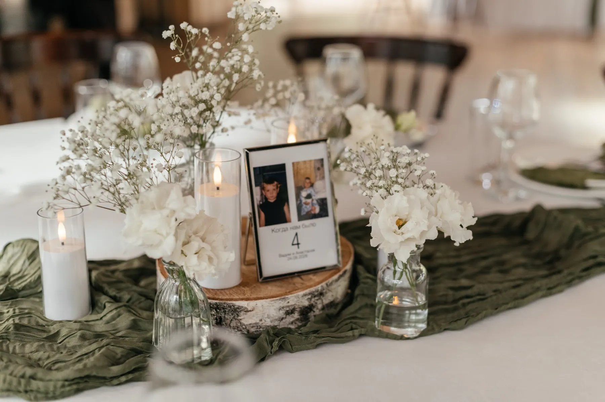
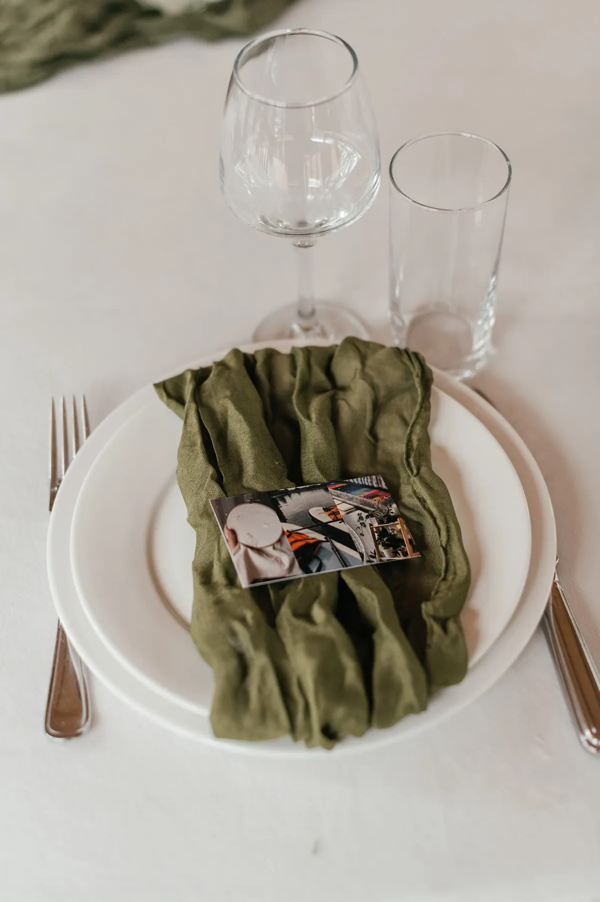
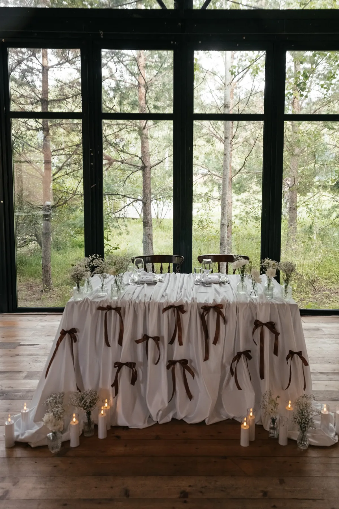
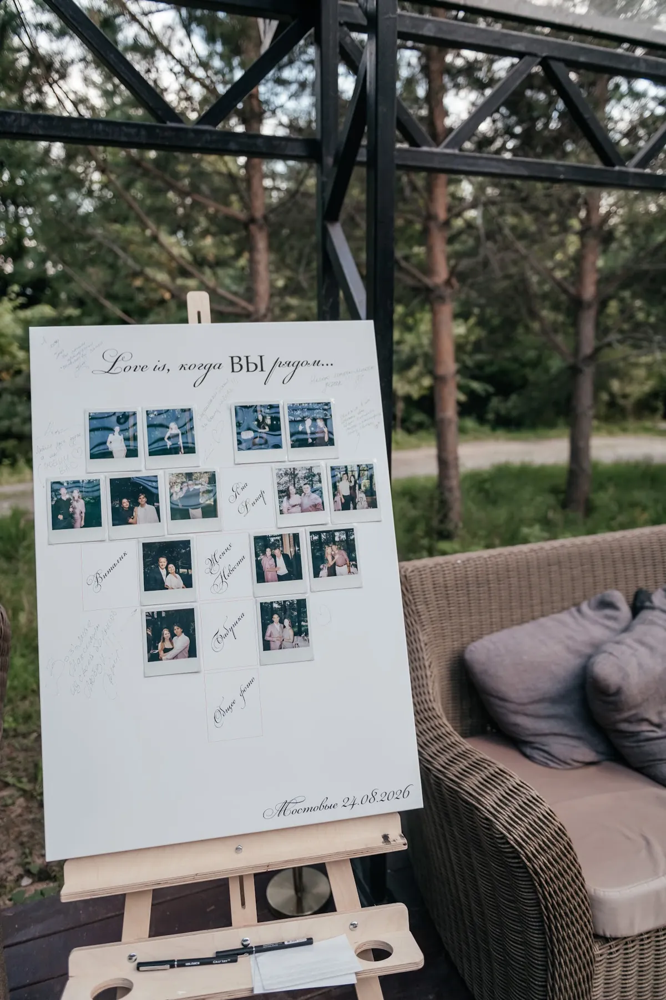

Рустик и бохо — свадьба в природных материалах: дерево, лён, сухие и полевые цветы, свечи. Главное — не превратить её в набор мелочей. Рассказываем, из чего складывается такое оформление и что работает, на примере нашей свадьбы в лесном павильоне.
Что такое рустик и бохо
Рустик — деревенская простота: дерево, лён, натуральные фактуры. Бохо добавляет свободы и лёгкой небрежности: полевые цветы, воздушные композиции, сочетание нескольких фактур. В свадебном декоре они часто идут вместе: общее — природные материалы, тёплая гамма и свет без лишнего блеска.
Материалы и палитра
- Дерево. Спилы, подставки, мольберты, деревянные столы. Если площадка сама деревянная, дерево работает без добавок.
- Лён и мятая ткань. Дорожки и салфетки с естественной складкой вместо глянцевой скатерти.
- Лёгкие цветы. Гипсофила и полевые композиции в небольших вазах.
- Свечи. Тёплый свет в стекле — основной «декор» вечера.
Палитра — природная: лён, олива, шоколад, белый. Подробнее о ней — в статьях про зелёную свадьбу и про свадьбу осенью.


Как оформить зоны
Президиум и фон. В нашем кейсе — белая ткань с шоколадными бантами и свечи; простая идея, которая выглядит цельно. Велком-зона. Тканевая стена с бантами и план рассадки на мольберте. Подробнее — в статье про велком-зону. Столы. Дорожка, небольшие композиции, номер или фото пары — всё в одной гамме.


Пример: свадьба в лесном павильоне
Свадьба среди деревьев: оливковые салфетки и дорожки, гипсофила и много свечей, шоколадные банты на белой ткани, а в зале — деревянный пол и большие окна. Подробнее — в кейсе «Зелень и свечи в лесном павильоне».
Совет: рустик любит естественность, но не хаос. Оставьте две-три главные идеи (ткань, свечи, лёгкие цветы), а остальное уберите.
Как заказать
Расскажите о площадке — предложим природные материалы под ваш зал и посчитаем смету.
Частые вопросы
Чем бохо отличается от рустика?
Рустик — про простоту и дерево, бохо — про свободу и лёгкость. В оформлении они часто объединяются в природной гамме.
Подойдёт ли такой стиль для обычного зала?
Да, если добавить ткань, цветы и свет. Но лучше всего он работает на площадках с деревом и видом на природу.
Какие цвета выбрать?
Лён, оливковый, шоколадный, белый и тёплые оттенки. Яркие цвета лучше оставить для акцентов.